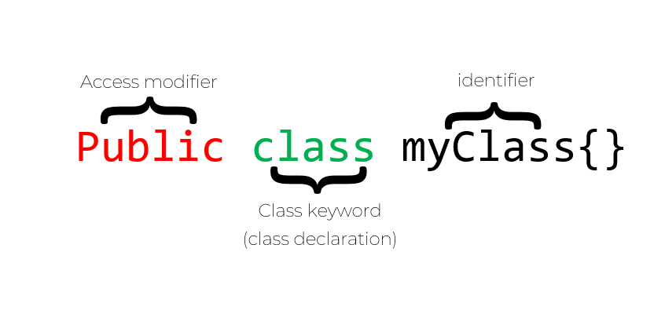
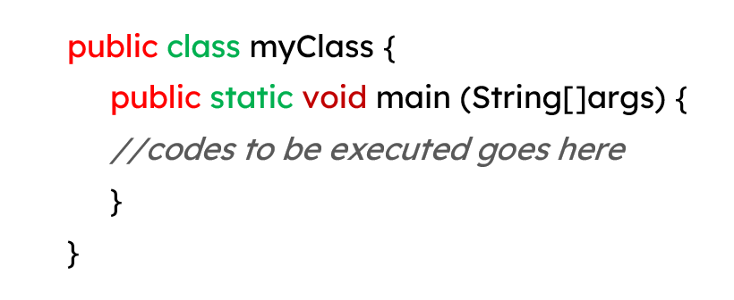
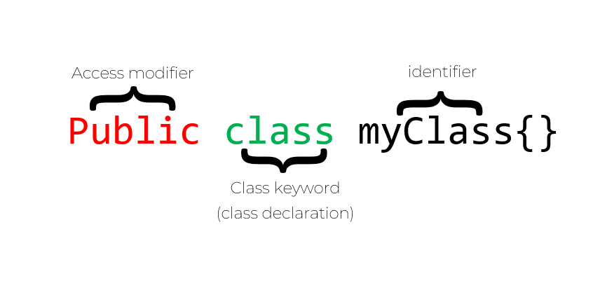
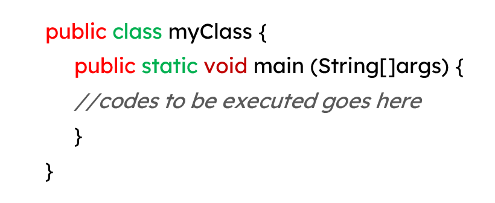

On our previous topics and CodeDive activities, we encountered, multiple times, the unfamilliar syntaxes like the public class myClass, public static void main (String[]args). In this course lesson, we will discuss the essential syntaxes, a beginner Java programmer need to know.
Java is an object-oriented programming language or an OOP. Java being an OOP provides a clear structure on its programs, as well as make the code easier to maintain and helps the developer not to create codes repetitively. However, tackling OOP seems to be advanced for a basic course. Let's keep the things basic. Let's study the basic Java syntaxes that is so important for the developers, as well as to you, a beginner, to know.
The Class
Every line of codes must be placed inside a class. A class is like a blueprint or a template. It provide outlines which defines how things (objects) works or what kinds of functionality should it possess (methods) and what data or characteristics (attributes) an object should have.

To create a class, the word "class" should be used followed by your desired name or identifier for the class. In this case we created a class named "myClass". In naming a Java class consisting of two words, it is advisable to write the first letter of the first word in small case and the first letter of the second word in upper case. Spaces are also not allowed in Java naming, thus, to show a space, use an underscore ("_") instead. Java names were also case-sensitive, meaning, "java" and "Java", are completely different things.
Within the curly braces at the end of a class, we can now create what we called, methods.
Method is like the functionality an object could possess or in simple words, actions that can be performed.
One of the most common methods in Java is the print() and the println() methods. As you can still remember, we use these methods when we are printing a text or a variable's output. It has a function, of course, it has a job that it is doing everytime we're using it, making it a method.
The main Method

Anything that goes inside the main method's curly braces will be executed. If you put a println(); method within the main method, the printing process will be initiated.
CodeDive!
Have a class, create a class! Fill the missing parts of creating a class and its main method by subtituting the * (asterisks) with the correct word! Choices: (main, class). Execute it and see its result!
MAWD
THINGs
Java Basics: Syntax
Lesson 5
<Prev
Quiz>
Understanding Java Syntax
On our previous topics and CodeDive activities, we encountered, multiple times, the unfamilliar syntaxes like the public class myClass, public static void main (String[]args). In this course lesson, we will discuss the essential syntaxes, a beginner Java programmer need to know.
Java is an object-oriented programming language or an OOP. Java being an OOP provides a clear structure on its programs, as well as make the code easier to maintain and helps the developer not to create codes repetitively. However, tackling OOP seems to be advanced for a basic course. Let's keep the things basic. Let's study the basic Java syntaxes that is so important for the developers, as well as to you, a beginner, to know.
The Class
Every line of codes must be placed inside a class. A class is like a blueprint or a template. It provide outlines which defines how things (objects) works or what kinds of functionality should it possess (methods) and what data or characteristics (attributes) an object should have.

To create a class, the word "class" should be used followed by your desired name or identifier for the class. In this case we created a class named "myClass". In naming a Java class consisting of two words, it is advisable to write the first letter of the first word in small case and the first letter of the second word in upper case. Spaces are also not allowed in Java naming, thus, to show a space, use an underscore ("_") instead. Java names were also case-sensitive, meaning, "java" and "Java", are completely different things.
Within the curly braces at the end of a class, we can now create what we called, methods.
Method is like the functionality an object could possess or in simple words, actions that can be performed.
One of the most common methods in Java is the print() and the println() methods. As you can still remember, we use these methods when we are printing a text or a variable's output. It has a function, of course, it has a job that it is doing everytime we're using it, making it a method.
The main Method
Anything that goes inside the main method's curly braces will be executed. If you put a println(); method within the main method, the printing process will be initiated.
CodeDive!
Have a class, create a class! Fill the missing parts of creating a class and its main method by subtituting the * (asterisks) with the correct word! Choices: (main, class). Execute it and see its result!